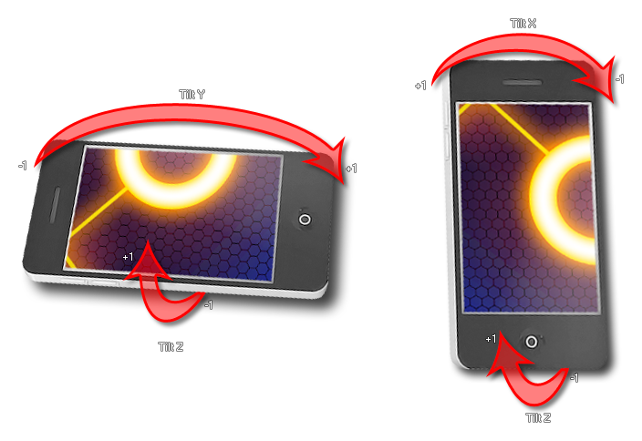

device_get_tilt_y()
Returns: Real
This function returns a value between -1 and 1 depending upon the angle of "tilt" of the device. The actual correlation between degrees of tilt and the value returned depends on the device and OS that it uses, but generally a value of 1 or -1 is the same as +/-90°. The image below shows how each if the available functions relates to the device: 
if display_get_orientation() =
display_landscape
{
x += sign(device_get_tilt_y());
}
else
{
x += sign(device_get_tilt_x());
}
The above code checks the orientation of the display and then uses the corresponding tilt value to move the player along the x axis.